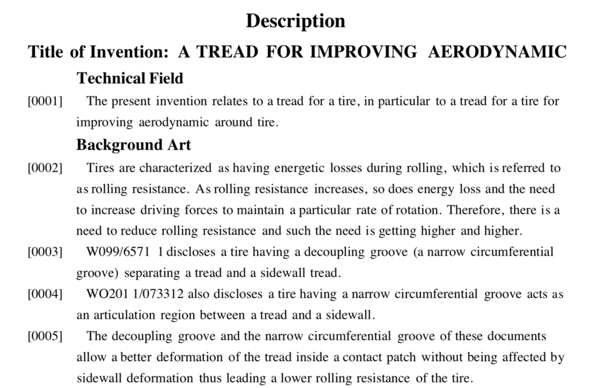
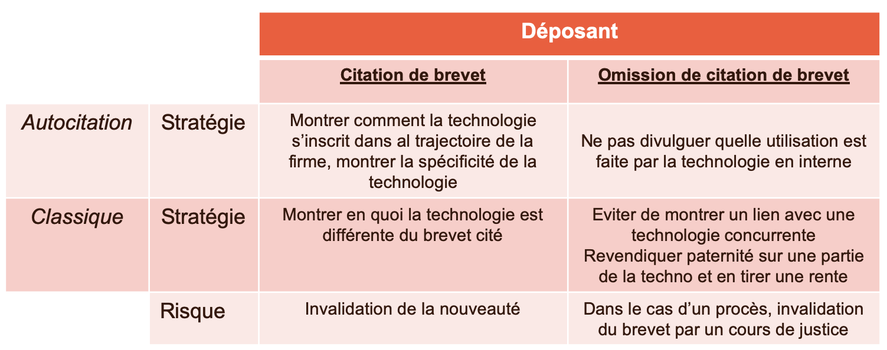
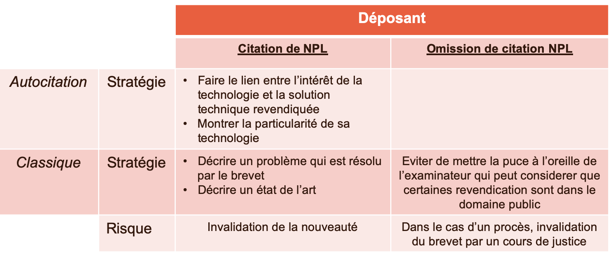
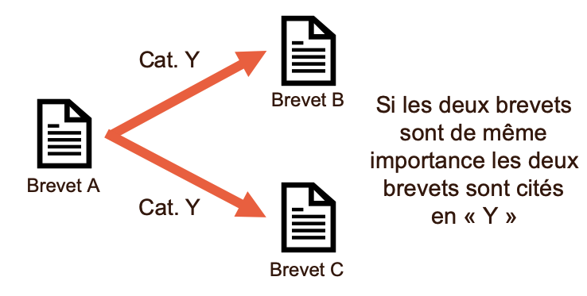
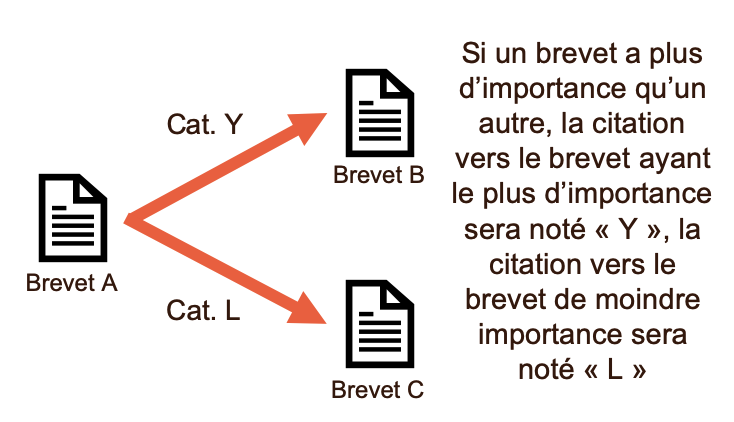
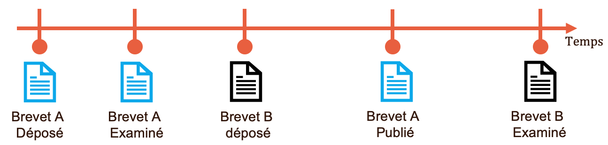
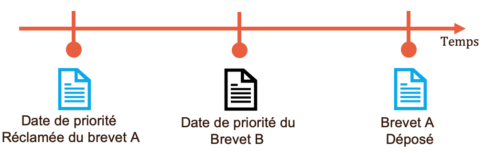
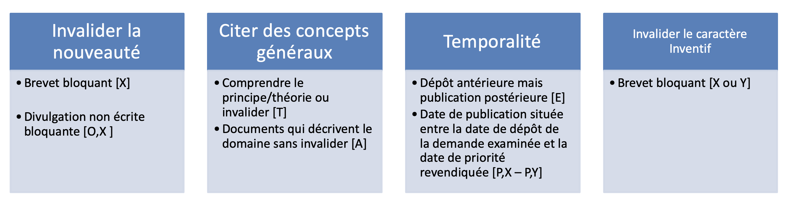
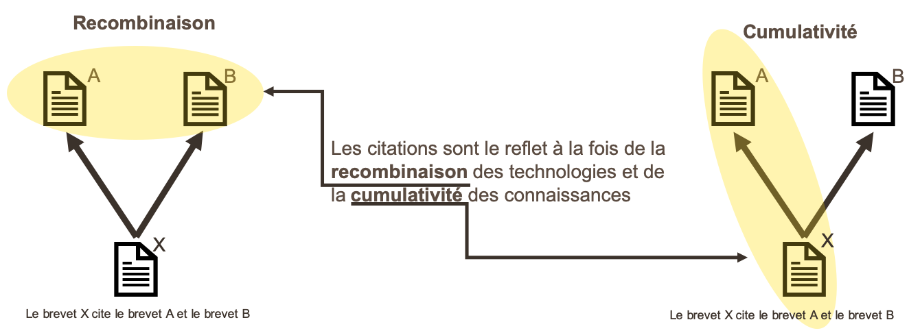
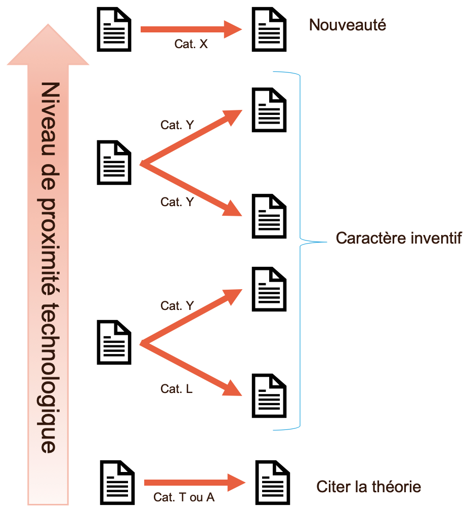

Citation Network Analysis for Decision-Making
Theory: The Patent Citation System
Patents grant an exclusive right to their holder. This right is intended to reward R&D efforts through a temporary monopoly rent. The underlying logic is that without this protection, inventors would have less incentive to invest in R&D because they could wait for others to innovate and then copy them.
The patent system also has a disclosure function: it makes technology visible to the rest of the world and allows other inventors to build on it. In other words, it incentivizes innovation while ensuring that newly created knowledge remains available for further innovation.
To make this system effective, we must distinguish what is patentable from what is part of the public domain. Citations play a central role in this process. A citation is a reference to a written or oral document related to the technology an inventor seeks to protect.
Two forces are at work:
- The inventor tries to maximize the scope of protection.
- The examiner ensures that this scope is limited by prior patented knowledge and public-domain knowledge, and that patentability criteria are met.
These actors have different incentives and objectives, which must be understood first.
We use citations as signals to:
- Identify an actor’s influence.
- Identify an actor’s dependence.
- Assess technological proximity between actors.
- Understand the structuring of a technological field.
- Identify possible new markets.
- Identify potential partners.
- Identify technology licensing opportunities.
Before explaining how we answer these questions, we need a solid understanding of the citation system so we can select the right information for each analytical objective.
This chapter aims to:
- Identify the motivations of inventors and examiners when citing.
- Explain the biases resulting from these motivations.
- Interpret citations for technological intelligence analysis.
Inventor Citations
An inventor may cite prior art for different reasons. Choosing to cite, just like choosing not to cite, can be strategic (Alcacer et al. 2009).
A first motivation is to describe prior art in order to position the invention. The objective is to demonstrate novelty by citing documents that are close but still significantly different. Not citing a document can also allow an inventor to claim ownership over certain aspects of technology that may later be monetized (Lampe 2012; Hall et al. 2005).
For these reasons, inventor citations can be considered strategic (Li et al. 2014). They help differentiate an invention from competing inventions, reducing the risk of refusal or opposition.
In some cases, an inventor (or their patent attorney) may choose not to include citations to provide minimal information and try to secure the broadest possible protection. Alcacer et al. (2009) show that at the USPTO, examiner citations represent about 63% of citations on average, and about 40% of patents receive no inventor citations.
An important exception is the USPTO “duty of candor,” which requires inventors to disclose all known references relevant to their invention. As a result, USPTO-granted patents often contain much larger citation volumes than patents from other offices.

At a finer level, we distinguish between:
- Citations to other inventors’ documents.
- Self-citations (references to documents authored by the same inventor).
This distinction matters because motivations differ. We also distinguish citations to patents from citations to non-patent documents (“Non-Patent Literature” or NPL).
Figure Figure 2 summarizes inventor motivations for citing patents, ranging from basic literature positioning to more strategic differentiation. The risk for the inventor is that a cited document may later be used to invalidate claims. Omitting a citation reduces this immediate risk, but the same document can still emerge in litigation.


In many analyses, inventor citations are excluded. Because these citations are often strategic, they should instead be interpreted as such.
Examiner Citations
The examiner’s role is to assess patentability criteria within the relevant office. There are three core criteria, although not all offices apply them in exactly the same way:
- Novelty: protect the granted right while protecting public knowledge.
- Industrial applicability: avoid blocking innovation.
- Inventive step: avoid blocking innovation.
Citations allow examiners to justify decisions and narrow patent scope. A citation can identify a document that challenges novelty, inventive step, or applicability.
The search report lists the references identified by the examiner during examination. To improve readability and interpretation, citations are categorized by type. A complete list is available from patent office guidelines. For example, an examiner can use category "X" when a single prior document challenges the novelty of a claim.
Other categories include "O", "T", "Y", "I", "A", and "P". Below are the categories that are especially useful for technological intelligence analysis.
Category "Y" Citations
EPO guidelines indicate that when a combination of several documents demonstrates lack of inventive step, those documents are cited as "Y".
This differs from category "X" in two ways:
"X"can invalidate novelty."X"does so with a single document.
In Figure Figure 4, two documents have equal weight and both are marked "Y". If one document is central and another only supportive, the supportive one may be marked "L" while the central one remains "Y" (Figure Figure 5).


Category "E" Citations
Category "E" is used when a citation refers to a document claiming an earlier priority date, even though that document was filed after the citing patent. This signals a priority-date conflict.
Priority date determines legal precedence and attribution of invention.

Category "P" Citations
Like "E", category "P" highlights a precedence issue. A "P" citation points to a document filed before another but published after the filing date of the cited patent.
This indicates information unavailable to the inventor at filing time. "P" is usually combined with another class, such as "P,Y" or "P,X".

Category "O" and "T" Citations
"O"indicates an oral disclosure (e.g.,"O,X"or"O,Y")."T"indicates a citation to a theoretical concept, either to challenge the theory in the patent or to clarify what is described.
Using Citation Categories in Competitive Intelligence
For economic and competitive intelligence analyses, categories "X" and "Y" are usually the most influential.
"X"challenges novelty with a single document."Y"challenges novelty or inventive step through a combination of documents."I"also challenges novelty in examination practice.
During examination, examiners may reuse references initially provided by inventors. When examiner and inventor citations coincide, the citation may be marked "D". However, Schmoch (1993) report that at the EPO only 8.4% of all citations are category "D", supporting the view that examiner and inventor citation strategies differ.
The examiner’s strategy is to protect public-domain knowledge and reward only the inventor’s true technological contribution. In that sense, citations are primarily limiting instruments.

Examiner citations and inventor citations do not play the same role. Citation categories should be considered explicitly, especially for analyses focused on a specific domain or actor.
Citation Interpretation
Citations are a key information source for economic and technological intelligence. In our analyses, we apply specific interpretations to citation-based indicators. These interpretations should be made explicit first.
Economic Interpretation
In economics, we seek to explain how technology emerges and evolves, and how it affects society. In a foundational perspective, Schumpeter argues that innovation results from combining existing ideas and technologies (Schumpeter 1942). This assumes that knowledge is cumulative: today’s knowledge builds on yesterday’s.
If knowledge is cumulative and innovation is recombinative, citations become especially valuable for studying technological evolution and economic impact. A citation indicates that an inventor combined cited technologies when producing a new invention, consistent with cumulative and recombinative innovation.

Because this combination requires technical understanding of cited technologies, we interpret each citation as a knowledge flow between the cited and citing patents. A citation also indicates a degree of technological proximity.
This proximity is justified in two ways:
- If an examiner assigns category
"X"or"Y", the cited document is close enough to challenge the claim. - Even for non-blocking citations (e.g.,
"T"or inventor-added references), the citation still indicates combinability of technologies, which implies proximity.

Implications
Knowledge Flows
The knowledge-flow interpretation is based on the idea that patents force disclosure of information that actors might otherwise keep secret. Information diffuses from the applicant to any reader of the patent.
A citation is therefore treated as evidence that this diffusion has been operationalized in a new invention. Firms file patents to secure temporary protection, but filing also creates involuntary informational spillovers that can benefit competitors.
In competitive analysis, it is therefore important to monitor how other actors exploit knowledge produced by the focal firm. More broadly, this interpretation is useful when studying how technology transfers from one domain to another.
Technological Proximity
A citation indicates that a firm is positioning itself on technology close to that of the cited firm. This gives a more precise view of strategic positioning than high-level IPC co-classification proximity alone.
Technological Interpretation
From a technological perspective, a citation (especially "X" and "Y") indicates that an invention relies on the cited technology. This can reflect either:
- Incremental innovation extending the cited invention.
- Reuse of the cited invention in another context.
A citation therefore helps identify actors using and improving a technology, as well as actors valorizing it in other domains. By extension, actors with high incoming citation volumes often have strong influence in their domain, because others depend on their technologies to innovate.
This dependence can create strategic risk and often motivates licensing agreements, acquisitions, or mergers to secure access to key technologies.
Biases in Citation Data
The motivations discussed above create observable biases in citation volumes and structures.
A first bias concerns citation localization, meaning the geographic location of cited inventors. The literature shows that examiners tend to cite patents from other countries, while inventors tend to cite geographically closer patents or documents (Azagra-Caro and Tur 2014; Criscuolo and Verspagen 2008).
The logic is that inventors are more familiar with technologies close to their own work, while examiners are expected to take a broader view. From this perspective, inventor and examiner citations are complementary sources for understanding technological evolution.